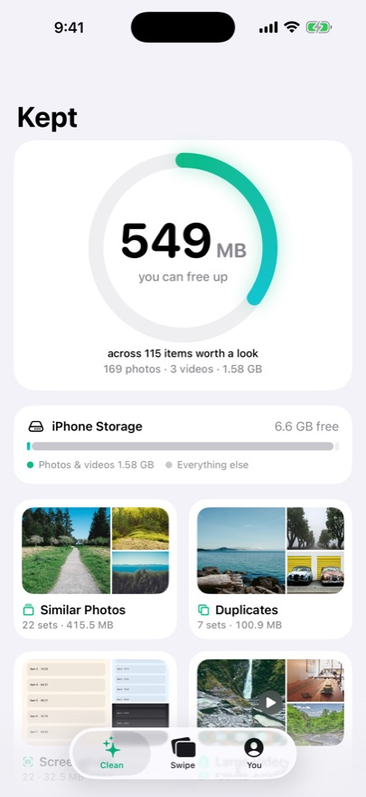
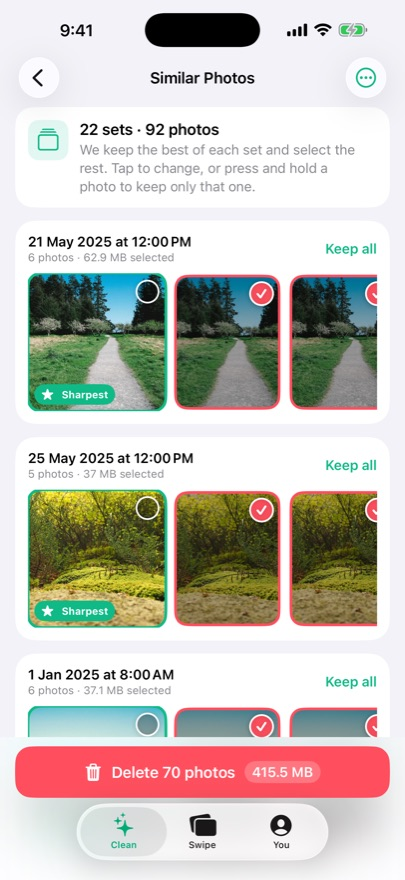
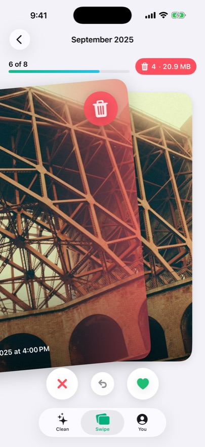
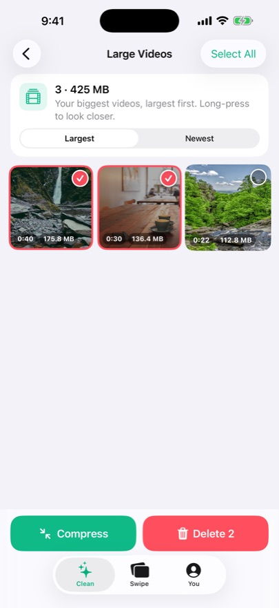

Free up iPhone storage. Pay once.
Free up space on your iPhone in minutes. Duplicates, similar shots, old screenshots, huge videos, duplicate contacts and email clutter. Your photos never leave your phone.
$9.99 once. No subscription, no account, nothing collected.
What’s on it
- A1Similar photos grouped, best one kept automatically (sharpest, favourites first)
- A2Exact duplicates found across your whole library
- A3Screenshots, screen recordings, blurry and blank photos
- A4Large videos biggest first, plus compress to 1080p/720p and save up to 85%
- B1Swipe through your camera roll month by month: right keep, left delete, undo anytime
- B2Live Photos to stills: keep the photo, drop the motion clip
- B3Merge duplicate contacts, with a full backup and undo
- B4Inbox sweep: see who fills your mailbox, trash whole senders and unsubscribe
Inside the sleeve




The price, said plainly
Swipe cleaning free and unlimited forever. Smart cleanup free up to 500 MB a day. Kept Pro $9.99 once. Other cleaners charge $5.95 to $11.99 a week.
- KeptMost cleaner apps: $5.95 to $11.99 a week$9.99 onceout soon
Competitor prices from their App Store listings, checked November 2026.
Liner notes: iPhone storage full? Check these first
- Message attachments. Settings, General, iPhone Storage, Messages. Years of videos hide here.
- Recently Deleted. Deleted photos stay for 30 days and still use space until you empty the album.
- Duplicate and similar photos. Keep the sharpest shot of each burst and delete the rest.
- A few huge videos. Sort biggest first. A handful of 4K clips can take gigabytes, or compress them to 1080p.
- Apps you never open. Settings, App Store, Offload Unused Apps removes the app but keeps its data.
Privacy
No account, no ads, no tracking, no data collection. Everything happens on your iPhone.
Made for
Anyone with full iPhone storage: parents with huge camera rolls, people getting 'Storage Almost Full', heavy screenshot takers.
Questions
How does Kept free up space on my iPhone?
Kept finds exact duplicates, near-identical shots (keeping the sharpest), screenshots, screen recordings, blurry photos and the largest videos, and clears them in one tap. It can also compress big videos by up to 85%.
Is Kept a subscription like other cleaner apps?
No. Swipe cleaning is free and unlimited forever and smart cleanup is free up to 500 MB a day. Kept Pro unlocks everything for a single $9.99 payment. No weekly fee and no trial that turns into a charge.
Are my photos uploaded anywhere?
No. Everything happens on your iPhone. No account, no ads, no tracking, no data collection.
Can Kept merge duplicate contacts?
Yes. It finds people saved twice by number, email or name, merges them into one card, backs up first and lets you undo any merge.
Why is my storage still full after deleting photos?
Deleted photos stay in Recently Deleted for 30 days. Kept shows you how to empty it so the space comes back right away.